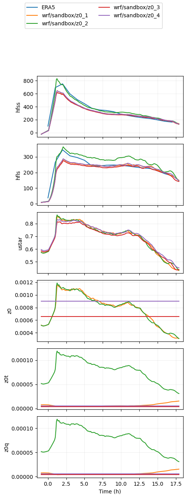
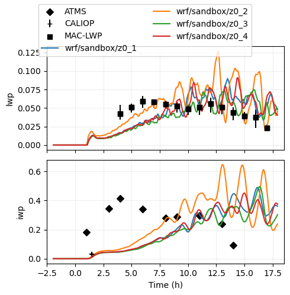

Sensitivity to roughness lengths (last updaed 9/28/23)#
Timothy Juliano (NCAR/RAL) and Andrew Ackerman and Ann Fridlind (NASA/GISS)#
Special thanks to Dmitry Chechin (Obukhov Institute of Atmospheric Physics) for motivating this work#
Hypothesis: momentum (z0) and scalar [temperature and moisture (z0t and z0q)] roughness length formulations impact CAO cloud evolution through surface momentum and heat fluxes because these events are strongly surface-forced#
Approach: test 3 sets of formulations and derive reasonable set for COMBLE-MIP#
Many formulations exist for z0, z0t, and z0q; here, we explore just a few of the more well-known formulations#
1. Momentum roughness length (z0):#
-> Functional form and a2 from Charnock (1955, QJRMS) and Smith (1988, JGR)#
-> a1 from COARE 3.5/Edson et al. (2013 JPO) (eq. 13, assuming 10 m wind speed = 12 m/s)#

where a1 = 0.0154, a2 = 0.11, u* is friction velocity, g is acceleration due to gravity, and ν is kinematic viscosity#
2. Scalar roughness lengths (z0t and z0q):#
-> Functional form from Fairall et al. (2003, JC) (eq. 28)#
-> Equation is valid for both z0t and z0q#

where Rr is the roughness Reynolds number, Rr = z0 x u* / ν#
Sensitivities#
1. z0_1: Compute z0, z0t, and z0q according to above equations/constants#
2. z0_2: Compute z0 according to above equations/constants and set z0t = z0q = 0.1*z0#
3. z0_3: Set z0, z0t, and z0q according to CONSTRAIN intercomparison case (z0 = 6.6 x 10^-4; z0t = z0q = 3.7 x 10^-6)#
4. z0_4: Compute constant z0, z0t, and z0q values from z0_1 for COMBLE-MIP case (z0 = 9.0 x 10^-4; z0t = z0q = 5.5 x 10^-6)#
%run functions_plotting.py
## select simulations to plot
sim_keyword = 'z0'
## load ERA5 fields
era5_1d, era5_2d = load_era5(PATH='../../data_files/')
## load radiosondes
rs_dat = load_rs(t_filter = 6.)
## load DOE ARM site statistics
aeri_dat = load_aeri(t_filter = 0.5)
## load MAC-LWP
maclwp_dat = load_maclwp(t_filter = 0.)
gongiwp_dat = load_iwpgong(t_filter = 0.)
## load CALIPSO retrievals (note the increased time window)
calipso_dat = load_calipso(t_filter = 3.)
../../data_files/theta_temp_rh_sh_uvw_sst_along_trajectory_era5ml_28h_end_2020-03-13-18.nc
../../data_files/anxsondewnpnM1.b1.20200313.172600.cdf
../../data_files/anxsondewnpnM1.b1.20200313.232200.cdf
../../data_files/anxsondewnpnM1.b1.20200313.052700.cdf
../../data_files/anxsondewnpnM1.b1.20200313.112600.cdf
## define (thermo-)dynamical variables that we want to plot
## 1-d variables (time)
var_vec_1d = ['hfss','hfls','ustar','z0','z0t','z0q']
## hfss ---> sfc sensible heat flux (W/m2)
## hfls ---> sfc latent heat flux (W/m2)
## ustar --> sfc friction velocity (m/s)
## z0 -----> momentum roughness length (m)
## z0t ----> temperature roughness length (m)
## z0q ----> moisture roughness length (m)
## 2-d variables (time,height)
var_vec_2d = ['theta','qv','ua','va']
## theta --> potential temperature (K)
## qv -----> water vapor mixing ratio (kg/kg)
## ua -----> zonal wind speed (m/s)
## va -----> meridional wind speed (m/s)
## load select variables from all simulations located in subfolders of the given directory
df_col_1d,df_col_2d = load_sims('../../output_les/',var_vec_1d,var_vec_2d,t_shift=-2,keyword=sim_keyword)
../../output_les/wrf/sandbox/z0_3/WRF_LES_COMBLE-I_sens3.nc
../../output_les/wrf/sandbox/z0_4/WRF_LES_COMBLE-I_sens4.nc
../../output_les/wrf/sandbox/z0_2/WRF_LES_COMBLE-I_sens2.nc
../../output_les/wrf/sandbox/z0_1/WRF_LES_COMBLE-I_sens1.nc
../../output_les/wrf/sandbox/z0_3/WRF_LES_COMBLE-I_sens3.nc
../../output_les/wrf/sandbox/z0_4/WRF_LES_COMBLE-I_sens4.nc
../../output_les/wrf/sandbox/z0_2/WRF_LES_COMBLE-I_sens2.nc
../../output_les/wrf/sandbox/z0_1/WRF_LES_COMBLE-I_sens1.nc
## plot the 1-d variables
plot_1d(pd.concat([df_col_1d,era5_1d]),var_vec_1d,t0=-1.,t1=18.)

## plot the 1-d variables, plus ERA5 and radiosondes at Andenes
plot_2d(pd.concat([df_col_2d,era5_2d,rs_dat,aeri_dat]),var_vec = ['theta','qv','ws','wd'],times=[-1.5,0,4,18],z_max=6000)
Computing wind speed
Computing wind direction
<Figure size 1000x600 with 0 Axes>
## define cloud variables that we want to plot
var_vec_1d = ['lwp','iwp'] # variables without ERA5 (shorter time axis)
## load select variables from all simulations located in subfolders of the given directory
df_col_1d,df_col_2d = load_sims('../../output_les/',var_vec_1d,var_vec_2d,t_shift=-2,keyword=sim_keyword)
../../output_les/wrf/sandbox/z0_3/WRF_LES_COMBLE-I_sens3.nc
../../output_les/wrf/sandbox/z0_4/WRF_LES_COMBLE-I_sens4.nc
../../output_les/wrf/sandbox/z0_2/WRF_LES_COMBLE-I_sens2.nc
../../output_les/wrf/sandbox/z0_1/WRF_LES_COMBLE-I_sens1.nc
../../output_les/wrf/sandbox/z0_3/WRF_LES_COMBLE-I_sens3.nc
../../output_les/wrf/sandbox/z0_4/WRF_LES_COMBLE-I_sens4.nc
../../output_les/wrf/sandbox/z0_2/WRF_LES_COMBLE-I_sens2.nc
../../output_les/wrf/sandbox/z0_1/WRF_LES_COMBLE-I_sens1.nc
## plot LWP and IWP
plot_1d(pd.concat([df_col_1d,maclwp_dat,calipso_dat,gongiwp_dat]),['lwp','iwp'])
